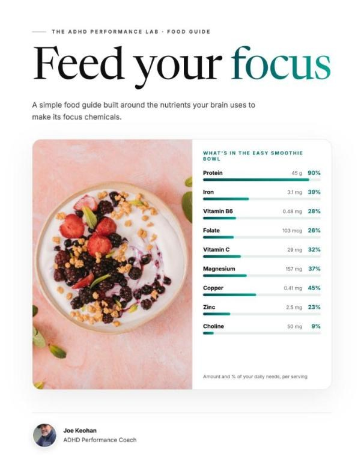

Feed Your Focus.
A simple food guide built around the nutrients your brain uses to make dopamine. No counting and no strict rules. Just easy foods to add to the meals you already eat so focus and follow through come a little easier.

What’s inside
- The nutrients your brain uses to make its focus chemicals
- Everyday foods that deliver them
- Small swaps, no all or nothing
Put your name and email below and I’ll send it over.
You’re in. Check your inbox and confirm your email so I can send you Feed Your Focus.
What the standard American diet misses.
National survey data shows most adults don't get enough of several key nutrients from food alone. Your brain needs every one of these to make and run its focus chemicals.
of adults fall short from food alone
of adults fall short from food alone
adults are below recommended levels
adults fall short from food alone
adults fall short from food alone
Falling short means a usual intake below the Estimated Average Requirement. Vitamin D, E, magnesium and C figures are for US adults aged 51 to 70 eating food alone, NHANES 2009 to 2012 (Blumberg et al., Nutrients, 2017). Omega 3 figure is based on blood levels of EPA and DHA, NHANES 2011 to 2012 (BMJ Open, 2021).
What you’ll learn.
32 pages that take you from why your focus needs feeding to exactly what micronutrients to put on your plate.
Understanding dopamine
ADHD isn’t simply “low dopamine.” It’s more like a leaky cup. Food can’t patch the cracks, but it can make sure what’s being poured in isn’t running low too.
Your three focus chemicals
Dopamine gets you going, norepinephrine locks you in and acetylcholine makes it stick. Learn what each one does and what it feels like when it’s not flowing well.
How your brain builds them
Protein brings the raw materials. Iron, B6, folate, vitamin C, copper and magnesium finish the job. Miss a few and the whole production line slows down.
Food lists that do the thinking
Proteins, carbs and fats, each tagged with the brain nutrients it brings, plus easy pairings like spinach and peppers that help you absorb more iron.
10 recipes and the Focus Sprinkle
Breakfast, lunch and dinner, each with a full nutrition panel, plus a seed mix you make once a week that covers a big share of your magnesium.
Food first, then fill the gap
The four nutrients no multi covers, a side by side look at three popular multis, and simple habits to get the most out of what you take.